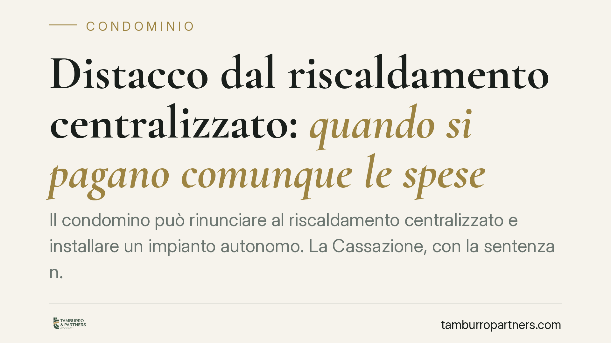

Distacco dal riscaldamento centralizzato: quando si pagano comunque le spese
Il condomino può rinunciare al riscaldamento centralizzato e installare un impianto autonomo. La Cassazione, con la sentenza n. 6618/2026, ribadisce però un limite: se il regolamento contrattuale lo prevede, resta l'obbligo di contribuire alle spese di gestione ordinaria, in deroga al criterio legale. Una distinzione decisiva per chi valuta il distacco.

Il caso deciso dalla Cassazione
Un condomino si era distaccato dall'impianto di riscaldamento centralizzato, dotandosi di un impianto autonomo. Riteneva, di conseguenza, di non dover più partecipare ad alcuna spesa relativa al servizio comune. Il condominio contestava questa posizione, richiamando il regolamento condominiale di natura contrattuale, che imponeva comunque la partecipazione alle spese di gestione ordinaria.
La Corte di Cassazione, Sezione II civile, con la sentenza n. 6618 del 19 marzo 2026, ha dato ragione al condominio. Il distacco è legittimo, ma non libera automaticamente il condomino da ogni onere economico quando una clausola contrattuale dispone diversamente.
Inquadramento normativo
Il diritto al distacco è riconosciuto dall'art. 1118, comma 4, c.c., secondo cui il condomino può rinunciare all'uso dell'impianto centralizzato di riscaldamento o condizionamento se dal distacco non derivano notevoli squilibri di funzionamento o aggravi di spesa per gli altri condomini.
La norma precisa che chi si distacca resta tenuto a concorrere al pagamento delle sole spese per la manutenzione straordinaria dell'impianto e per la sua conservazione e messa a norma. Non menziona, invece, le spese di gestione ordinaria, cioè quelle legate al funzionamento corrente del servizio (combustibile, conduzione, controlli periodici).
Qui entra in gioco l'art. 1123 c.c., che fissa il criterio legale di ripartizione delle spese. Si tratta però di una regola derogabile: le parti possono stabilire criteri diversi. E la deroga può trovarsi proprio nel regolamento di condominio di natura contrattuale, quello cioè accettato da tutti i condomini e richiamato negli atti di acquisto.
Il principio affermato
La Cassazione distingue due piani.
Sul piano del diritto al distacco, nulla cambia: il condomino può sempre staccarsi, nei limiti tecnici previsti dall'art. 1118 c.c.
Sul piano della contribuzione alle spese, invece, il regolamento contrattuale può imporre al condomino distaccato di partecipare anche alle spese di gestione ordinaria. Una clausola di questo tipo non è nulla: rappresenta una legittima deroga convenzionale al criterio dell'art. 1123 c.c., resa possibile dalla natura pattizia del regolamento.
In altri termini, chi acquista un immobile accettando un regolamento contrattuale che prevede questo obbligo, lo assume come vincolo negoziale. Il successivo distacco dall'impianto non cancella quell'impegno.
Implicazioni pratiche
Per il condomino che intende distaccarsi, la conseguenza è concreta: il risparmio atteso potrebbe essere inferiore alle previsioni. Pur non prelevando più calore dall'impianto comune, potrebbe restare obbligato a versare la quota di gestione ordinaria fissata dal regolamento.
Per l'amministratore, la pronuncia offre un parametro chiaro nella redazione dei riparti. Prima di esonerare un condomino distaccato dalle spese di gestione, occorre verificare se il regolamento contenga una clausola contrattuale di segno contrario.
La distinzione decisiva resta quella tra regolamento assembleare e regolamento contrattuale. Solo il secondo, per la sua natura negoziale, può validamente derogare al criterio legale incidendo sui diritti dei singoli. Una clausola analoga inserita in un regolamento di origine solo assembleare avrebbe efficacia ben più limitata.
Resta ferma la regola di base: anche in assenza di clausole derogatorie, il distaccato paga sempre manutenzione straordinaria, conservazione e messa a norma dell'impianto.
Cosa fare in concreto
- Leggete il regolamento di condominio prima di avviare il distacco, verificando se è di natura contrattuale e se contiene clausole sulla ripartizione delle spese a carico dei distaccati.
- Controllate l'atto di acquisto: il richiamo al regolamento contrattuale ne conferma l'efficacia vincolante nei vostri confronti.
- Fate redigere una perizia tecnica che attesti l'assenza di squilibri di funzionamento e aggravi di spesa, presupposto di legittimità del distacco ex art. 1118 c.c.
- Comunicate il distacco all'amministratore in forma scritta e tracciabile, documentando le condizioni dell'intervento.
- Verificate il piano di riparto successivo al distacco, distinguendo le voci di gestione ordinaria da quelle straordinarie e di conservazione.
Disclaimer
Contributo informativo a cura di Tamburro & Partners - Avv. Giuseppe Tamburro. Non costituisce parere legale.
Ogni condominio ha una storia a sé.
Se gestisci un'amministrazione e vuoi un confronto su una specifica questione condominiale, scrivi allo studio. Ti rispondiamo entro un giorno lavorativo.